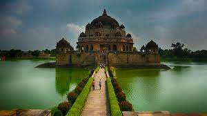
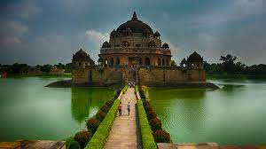
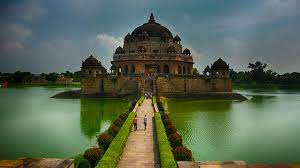
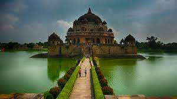

The capital is Bihar
 



Patnaancient Pataliputra, city, capital of Bihar state, northern India. It lies about 290 miles (470 km) northwest of Kolkata (Calcutta). Patna is one of the oldest cities in India. During the Mughal period it was known as Azimabad.
Patna is a riverside city that extends along the south bank of the Ganges (Ganga) River for about 12 miles (19 km). West of the old city lies the section called Bankipur, and farther southwest is a spacious new capital area with wide roads, shady avenues, and new buildings. Prominent among Patna modern structures are the Government House, the Assembly Chambers, the Oriental Library, a medical college, and an engineering college. Patna historic monuments include the mosque of Ḥusayn Shah of Bengal (1499); the Sikh Temple associated with the 10th Guru, Gobind Singh; and the granary at Bankipur (1786), popularly called the Golghar. The city also has the University of Patna (1917) and the Patna Museum. The city is connected by road to Hajipur, just north of the Ganges, via the Mahatma Gandhi Bridge across the river.
Bihar state of eastern India. It is bounded by Nepal to the north and by the Indian states of West Bengal to the northeast and Uttar Pradesh to the west. In November 2000 the new state of Jharkhand was created from Bihar’s southern provinces and now forms the state’s southern and southeastern borders. The capital of Bihar is Patna.